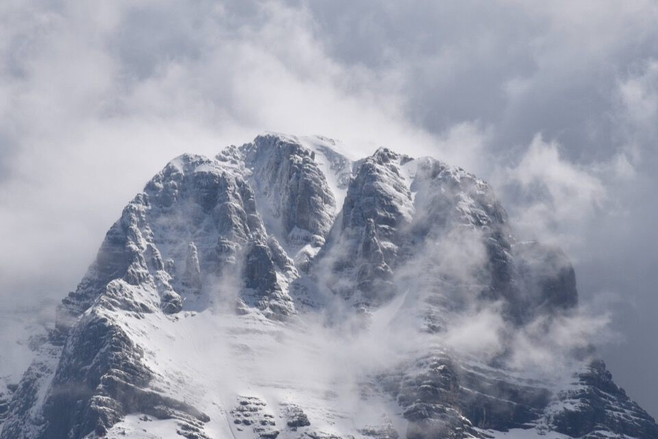

Lettura obbligatoria: Val Dogna: Tutta una valle in un uomo.
Il Cuel dai Gjais? cima insignificante ma dal panorama strepitoso; d'altronde lo diceva anche Kugy che i panorami più belli li si ha dalle cime mediane.
Suppongo che la spiegazione dell'oronimo sia da attribuire ai galli forcelli.
Povero Bruno che c'ha provato a convincermi ad andare con due macchine ma io testone ho insistito che non c'era motivo partendo da Plèziche... che errore! Solo per arrivare all'inizio del sentiero per il bivacco CAI Cividale, da Plèziche tocca scendere ad attraversare il Dogna, salire a Colle Fratte, scendere a guadare il rio Saline, tornare su 200-300 metri per aggirare le pendici dirupate della Costa Saline, scendere a guadare il rio Rondolòn, risalire leggermente agli stavoli Costa di Goliz; insomma 2 ore e un sacco di fatiche per ... trovarsi 200 metri più bassi di Plèziche (sic)!
Già da Chiout è da restare senza parole.
Ecco il Cimòn, qua chiamato Jôf di Gòliz, colla serpeggiante Costa di Goliz; il Cuel dai Gjais è quel cimotto sotto la forcje dal Fossâl; a dx del Cimòn infatti ci sono il Mùcul e il Ciuc di Vallisetta.
Bellissima la forra del Dogna.
Ci tocca attraversare a piedi nudi il rio Saline, era abbastanza scontato.
Dopo un'infinità di saliscendi arriviamo agli stavoli Costa di Goliz dove inizia per davvero la salita.
Questa è una delle più belle foto che ho mai scattato!
Quando si arriva ad una selletta, prima della Bergerie di Sotgoliz, il panorama si apre di colpo sul vallone dello Sfonderât, visione stupenda ed emozionante per chi come me sogna quei posti.
La bellissima cascata del rio Sfonderât, carica d'aqua.
Il luogo in cui si trovava la Bergerie di Sotgoliz; sulla mappa di Dougan e Marussi è segnato un sentiero che da qui traversa scendendo allo Sfonderât, più alto dell'accesso "classico".
Finalmente arriviamo a Sotgoliz, dove ora sorge il bivacco CAI Cividale, in posizione magnifica.
Ciò che resta della malga Sotgoliz.
All'attacco.

Salendo, con la coda dell'occhio vedo il Montasio... che spettacolo!
Finalmente in vetta.

Dalla vetta, verso forcella Mincigos e l'alto vallone del rio di Terrarossa (o riu dai balìns). È un versante davvero molto interessante.
Come tutto il versante sud dello Jôf di Dogna.
Non solo Semide.
Vicinissimi il Mùcul e il Ciuc: verrebbe quasi voglia di avvicinarsi, non fosse che il cengione alla base del Cimone s'inabissa orridamente nel Fossâl, che a sua volta precipita vertiginosamente nello Sfonderât.
La mitica Forca de la Puartate...
...con lo Jovet Blanc e lo Jôf di Misdì. Impressionante il baratro dello Sfonderât.
Dall'altra parte il Secjeiz, che nessuno sale mai (perlomeno sulla cima principale)!
Più in là i Curtissòn, gita banale dai Piani del Montasio ma che merita davvero per i panorami sulla val Dogna: in certi punti ci si può affacciare sopra le impressionanti pareti che precipitano nel rio Saline.
Verso il rio Saline, col Clap Blanc.
L'elegante Torre Carnizza che a me piace tanto.
Torniamo giù a Sotgoliz e iniziamo a salire verso l'attacco della via Norina, per poi scendere al rio Saline.
Nevaio sopra il quale non ero troppo contento di camminare.
Trovare l'inizio dell'ex CAI 655 non è per nulla scontato.
Dopo un pezzo, peraltro ripidissimo, arriviamo in prossimità di due canali con salti, dove sparisce ogni segno. Io trovo più in là una traccia evidentissima di bestie che però finisce in un mare di mughi, e Luciana che era passata di qui due anni fa non ricordava nulla del genere; torna indietro, cerca, riprova, insomma dopo un po' già mi immaginavo di rifare a ritrovo tutta la strada e tornare al bivacco! Alla fine conveniamo per seguire le bestie e una ripida pista di camosci in mezzo ai mughi ci riporta sulla retta via.
Per inciso: lì dei canali era da stare tutto a sinistra.
Ora giù al rio Saline.
Ma non è così facile come sembra da giù: guai a mancare un cambio di direzione nel costone boscoso.
Più avanti, anche se non ho foto a riguardo, c'è un tratto con cavo d'acciaio, francamente piuttosto impegnativo per via del bagnato; chissà dove passano le bestie.
La Cresta della Lance.
E i Curtissòns.